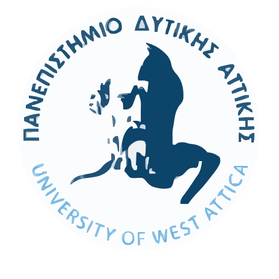
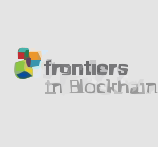
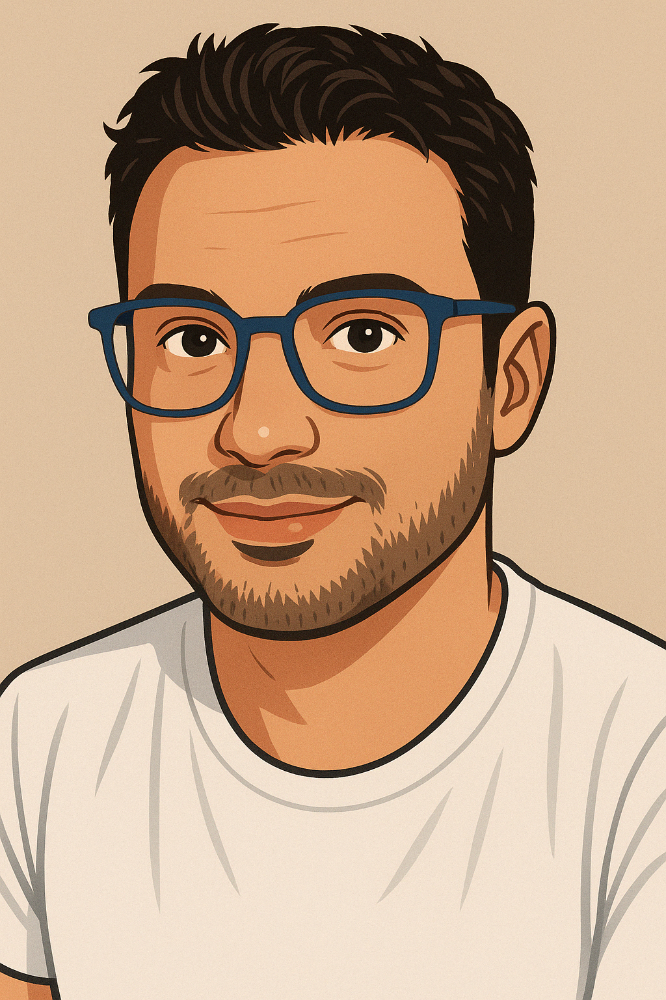

Blockchain security & distributed systems researcher focusing on DApps, Hyperledger Besu (QBFT) networks, Blockscout/Faucet integration, and transforming these infrastructures into practical learning environments for students and professionals.
About
Expertise
PhD in Computer Networks with specialization in dissemination of information in Unstructured Peer-to-Peer Networks.
Project Manager in EU and national research projects, coordinating multidisciplinary teams and delivering outcomes in blockchain, cybersecurity, and distributed systems.
Teaching Roles
University lecturer in Blockchain & Distributed Systems at UniWA and the University of Malta. Contributor to EU/national research projects and co‑author of the first Greek open‑access textbook on blockchain (Kallipos).
Teaching & hands‑on workshops on Blockchain, P2P networks, cybersecurity, smart contracts, and DApp security labs.
Research Interests
- Zero‑knowledge proofs (ZKPs), verifiable credentials, oracle security, protocol hardening.
- Cybersecurity & regulatory resilience under DORA and related EU frameworks.
- Blockchain infrastructure engineering: Besu QBFT, Blockscout, Faucet, node hardening.
- Decentralized Autonomous Organizations (DAOs) — governance models, token voting, resilience frameworks.
Professional Activities
- Professional Roles — Member of INATBA’s Academic Advisory Board; Associate Editor at Frontiers in Blockchain.
- Founder, Web3Edu Initiative — developing governance and educational frameworks for decentralized learning communities.
Affiliations & collaborators


Current Focus
🔬 Active Research Priorities
- Distributed Identities & eIDAS v2 Compliance — Aligning decentralized identity architectures with the eIDAS v2 framework for trusted digital credentials
- Zero-Knowledge Proofs (ZKPs) — Implementing privacy-preserving mechanisms for identity, educational credentials, and governance voting systems
- DAO Governance Models — Designing resilient decision-making frameworks for Web3 communities and education initiatives
- DORA Compliance — Developing cybersecurity and operational resilience strategies for blockchain systems under EU regulatory frameworks
🚀 Active Development Projects
- Proof of Escape (PoE) — Expanding Web3 security education gamification with advanced challenge levels and NFT rewards
- Web3Edu Foundation — Building governance infrastructure, credentialing flows, and educational frameworks for decentralized learning communities
- Besu QBFT Network — Enhancing monitoring, security hardening, and operational best practices for production-grade private networks
📚 Teaching & Dissemination
- Spring 2026 Courses — DLT Cybersecurity at University of Malta; Blockchain & DLT at UniWA
- Security Labs — Developing hands-on labs for ZKPs, governance attacks, flash-loan exploits, and consensus vulnerabilities
- Open Educational Resources — Curating Web3 learning materials and maintaining open-source repositories for blockchain education
Recent Research Projects
Current Projects
TARDIS - Trustworthy and Resilient Decentralised Intelligence for Edge Systems
Horizon Europe project focused on simplifying the development of correct, efficient, and resilient heterogeneous edge‑AI swarms.
Role Highlights:
- Role: Senior Researcher for NKUA
- Lead for WP7: Implementation and Evaluation
- Coordinating the Use Cases and associated Deliverables
GENERA – Re-vitalising Energy Transition in Touristic Islands
LIFE EU project supporting public authorities in accelerating the transition to sustainable, decarbonized energy systems in island and touristic regions.
Role Highlights:
- Role: Senior Researcher for UniWA
- Also responsible for project management tasks (coordination, reporting, deliverables)
- Designing the Web3 strategy and developing the card‑based educational game on green‑energy awareness
- Participation in dissemination activities and technical coordination
Completed Projects
FASTER - First responder Advanced technologies for Safe and efficienT Emergency Response
Horizon EU project supporting first responders across the full emergency‑response lifecycle—planning, logistics, diagnostics, training, and field operations.
Role Highlights:
- Role: Senior Researcher for UniWA
- Also responsible for project management tasks (coordination, reporting, deliverables)
- Delivered tools: MORSE (gesture recognition), RESCUE (encrypted BLE messaging), Smart Textiles (sensor‑enabled uniforms), K9 collar (rescue alerts)
- Focus on AI, secure communication, encryption mechanisms, and mobile applications for first responders
Additional Projects
ARTEMIS – Secure Supply Chain Traceability Management
ESPA (Research – Innovate) project developing a secure distributed software‑hardware architecture for supply‑chain traceability using blockchain, smart contracts, and embedded security.
Role Highlights:
- Role: Senior Researcher for iTrack Services (SME)
- Also responsible for project management tasks (planning, coordination, deliverables)
- Contributed to the system architecture design and integration with the company’s platform
- Participation in technical meetings and preparation of deliverables
Personal Development Portfolio
Active Projects
Proof of Escape (PoE)
A gamified Web3 learning platform featuring blockchain quizzes, token rewards, and progressive challenge mechanics.
Role Highlights:
- Designed interactive blockchain quiz mechanics
- Implemented ERC‑20 reward logic and progression
- Integrated NFT reward for unlocking advanced challenge levels
LDL Fantasy League DApp
A dynasty‑style fantasy league DApp with SBT identity, multi‑team trades, and DAO‑based governance.
Role Highlights:
- Backend architecture using Flask, PostgreSQL, and Google Sheets API
- On‑chain mechanisms for trade voting and SBT‑based profiles
- DAO governance for league rules, trade approvals, and proposals
Web3Edu Governance Framework
Modular governance architecture for decentralized educational ecosystems combining SBT identity, DAO voting models, and optional zero‑knowledge privacy layers.
Role Highlights:
- Designed modular governance workflows for decentralized decision‑making
- Integrated SBT identity for transparent, accountable participation
- Developed ZKP prototypes for privacy‑preserving votes and selective disclosure
Infrastructure & Research Tools
Besu QBFT Research Network
A private Hyperledger Besu (QBFT) Ethereum network for research on consensus, privacy, node resilience, and operational monitoring.
Role Highlights:
- Five‑validator network (v25.8.0) with Blockscout explorer and Faucet
- Hardened infrastructure with metrics, alerts, and log monitoring
- Smart‑contract experiments: SBTs, NFTs, ZKPs, oracles
Blockchain Security Labs
Hands‑on labs exploring consensus, attack patterns, oracle manipulation, and DeFi incident simulations inspired by bZx flash‑loan/oracle exploits.
Role Highlights:
- Design of oracle feeds and defensive mechanisms (TWAPs, circuit breakers)
- Incident walkthroughs with transaction‑trace analysis of oracle/flash‑loan exploits
Open‑Source Resources
Web3 Sources (Curated Repository)
Curated collection of resources and learning materials for Web3, blockchain, and distributed systems.
Popular Publications
Blockchain
Cybersecurity
ML / AI
IoT
A selection of representative publications is shown below. For the complete list, please visit my Google Scholar profile or consult my CV.
Blockchain & Web3
A survey on information security threats and solutions for Machine to Machine (M2M) communications
G. Tuna, D.G. Kogias, V.C. Gungor, C. Gezer, E. Taşkın, E. Ayday
Journal of
Parallel and
Distributed Computing 109 (2017) 142–154
Application of blockchain technology in dynamic resource management of next generation networks
M. Xevgenis, D.G. Kogias, P. Karkazis, H.C. Leligou, C. Patrikakis
Information
11(12), 2020
IoT & Wireless Systems
Deep learning empowered wearable‑based behavior recognition for search and rescue dogs
P. Kasnesis, V. Doulgerakis, D. Uzunidis, D.G. Kogias, S.I. Funcia, M.B.
González, C.
Giannousis, C.Z. Patrikakis
Sensors 22(3), 2022, Article 993
Books & Educational Material
An introduction to blockchain (Greek Open-Access textbook)
C. Patrikakis, H. C. Leligkou, D.G. Kogias
Kallipos Editions, 2023 — ISBN: 978-618-5667-59-9 — DOI:
10.57713/kallipos-171
Teaching
I teach courses and workshops on Blockchain, Web3, P2P networks, and distributed systems security, with emphasis on hands-on learning and real-world Web3 environments.
Introductory course covering blockchain fundamentals, cybersecurity threats, consensus mechanisms, and the DORA regulatory framework — enriched with hands‑on labs, threat analysis exercises, and PoA/PoS network simulations.
A practical course on designing, developing, and securing Web3 DApps. Includes smart contract security, QBFT validator deployment, gas‑cost optimization, and full‑stack development with real blockchain infrastructure.
A deep dive into cybersecurity, auditing, and assurance methods for DLT systems, with emphasis on EU regulatory alignment (e.g., DORA), risk modelling, and secure sandbox‑based experimentation.
Blockchain Security Labs
Design and delivery of Web3 security labs, including DeFi attack simulations, consensus experiments, oracle manipulation, and private testnets with Besu.
Contact

Let's Connect
Feel free to reach out for collaborations, speaking engagements, or research inquiries.